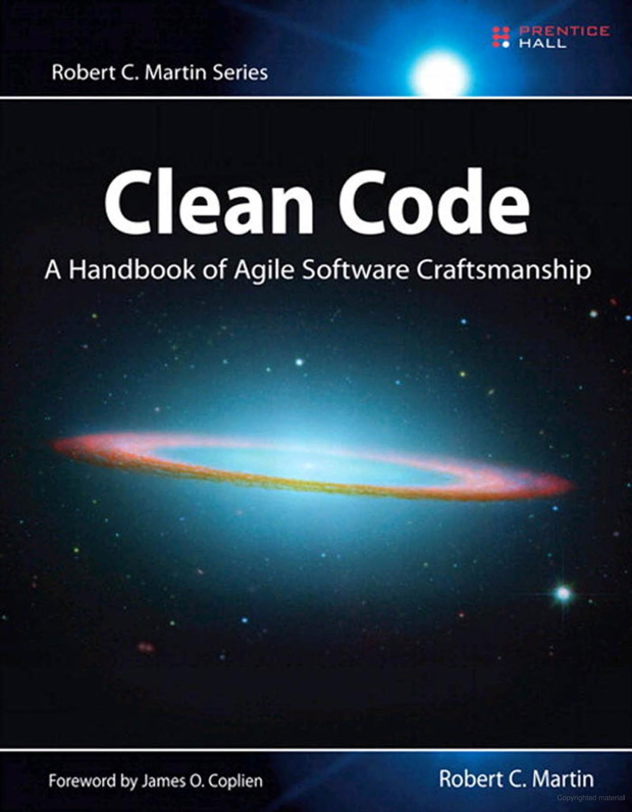

class: center, middle, main-title # Software Construction --- ## Today - A questionnaire - Feedback form is open on [Google Forms](https://forms.gle/4EAzS9anen8nYNSa7) - Content - What is "good code"? - What tools and practices are available to help us write it? - Questions, ideas, comments - [Sli.do #VUSE1908](https://app.sli.do/event/2nqavhzp) --- ## Software construction .center[Requirements] .center[|] .center[*(design activities)*] .center[↓] .center[Design] .center[|] .center[*(**construction activities**)*] .center[↓] .center[Code<br>and supporting artifacts] --- ## Code - The primary artifact -- - "Good code"? "Bad code"? -- - Qualities of good code -- - Works -- - Is easy to understand -- - Is easy to change -- - Is well tested -- - **Code is written for humans, not for computers** --- ## Recommended book  --- ## Code: Easy to understand - Code is read way more often than changed -- - Therefore, optimize for readability -- - Some examples - Naming -- - Functions -- - Comments -- - Formatting -- - Familiar code is easier to understand -- - Therefore, have coding standards -- - Readability (usually) trumps performance --- ## Code: Easy to change - To change any code you have to understand it first -- - Refactoring -- > For each desired change, make the change easy (warning: this may be hard), then make the easy change. > <br><br>— <cite>Kent Beck</cite> --- ## Code: Well tested - Automated tests - more on this next time --- ## A note on reuse - Overall goal - Minimize accidental complexity -- - Maximize the amount of code not written -- - Libraries and Frameworks -- - What is the difference? -- - Both are great, but can cause future upgrade problems<br> (esp. frameworks) --- ## Other artifacts - Construction is not only about writing code -- - Other artifacts are also produced -- - Assembled binaries - Documentation - Installation scripts - User manuals - Etc. --- ## Practice: Code reviews - Idea - Any code that is submitted must be peer-reviewed -- - Analogy with proof-reading an article -- - Great way to catch problems early, spread knowledge, align style, learn, and teach --- ## Tools: Static code analysis - Also known as *linters* -- - Idea - Analyze the code *without executing it* to find potential problems -- - Compilers evolve to include checks from linters -- - Linters evolve to include new and more complex checks --- ## Tools: Build automation tools --- ## Tools: IDEs - Also known as *Integrated Development Environments* -- - Idea - A developer should do all she needs to do in one app/program/environment -- - IDE combines - **Source code editor** - Incremental compiler - Build automation tools - **Debugger** - Much much more (plugins) --- ## Tools: Version control system - Also known as *VCS* or by product name: Git, SVN, CVS, Mercurial, Jazz -- - Idea - Keep track of all changes to code across multiple files -- - Allows to - See who changed what when - Go back to a specific revision - Maintain different "work-in-progress" versions (branches) --- ## Key takeaways - Code is written for humans -- - Code should be optimized for readability -- - Code is not the only artifact being produced in construction phase -- - Code reviews are probably the most important practice to have in your team -- - Many tools are available - use them to your benefit --- class: middle, center # Questions? --- ## Next time - Discuss your feedback ([Form to submit it](https://forms.gle/4EAzS9anen8nYNSa7)) - Software testing - Can we write software without defects? - If not, could we find them in an automated way?